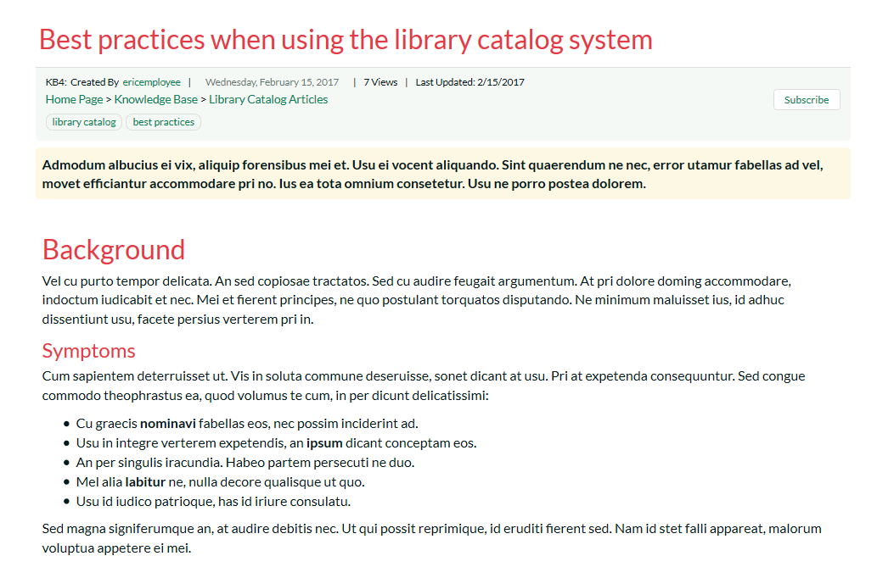

Knowledge Base
The KronoDesk® online knowledge base provides the first level of support to customers. Instead of having to constantly respond to the same routine enquiries and support requests, customer support agents can use the built-in knowledge base to create articles related to different topics, categories and products. Knowledge base articles can be linked to multiple categories and also tagged with meta-tags to make searching easier by customers. The system includes full rich-text editor so that articles can be formatted with lists, tables, different text styles and embedded hyperlinks.
When a user starts entering a support ticket, KronoDesk automatically scans the available KB articles to suggest a response before they submit the ticket.
Article List
When you click on the Knowledge Base option in the global navigation, you will be taken to the main knowledge base page:

This page consists of list of article categories, with recent articles and sub-categories displayed underneath. In addition, on the left-hand side, there is a tag cloud that lets you find articles that use the various tags.
Category and Article List
The main section of the page will display a list of the article categories and sub-categories, with the list of most recent articles displayed underneath:

If you click on a specific category or sub-category, KronoDesk will display the list of articles in the category, ordered by date:

If you click on the RSS icon, you can subscribe to the current category in an RSS-compatible newsreader.
If you click on an article in the list, it will display the article details page described in Article Details.
Tag Cloud
The tag cloud displays a list of all the tag names associated with knowledge base articles in the system. The size and color of the font is proportional to the number of articles associated with the tag.
Clicking on a tag name will display a page listing all of the articles that use that tag:
Article Details
When you click on the name of an article, the article details page is displayed:

This page displays the following information:
-
Article Breadcrumb -- The breadcrumb list at the top of the page displays the hierarchical list of categories and sub-categories that the article belongs user. If you click on one of the categories, the system will display of related articles in that category.
-
Knowledge Base Article -- This is the main part of the page and displays the name, short description and long description of the knowledge base article. If you click on the Subscription icon to the right of the article title, the article will be added to your list of subscribed knowledge base articles. Whenever a change is made to the article, you will receive an email notification.
-
Article Info -- This information pane displays the unique ID assigned to the article, the date it was last updated and the number of times that it has been viewed.
-
Tags -- This pane displays a list of the meta-tags associated with the current knowledge base article as well as an indication how many other knowledge base articles have been tagged with the same keywords. Clicking on the meta-tag name will automatically take you back to the knowledge base list page with the filter set to the tag name in question.
-
Operations -- This pane is only visible for customer support agents and will display options for creating a new article, deleting the current article or modifying the current article.
-
Links -- This section lets you see the links to related information associated with the article
-
Attachments -- This section lets you view the documents and screenshots attached to the current article.
Editing an Article
Clicking on the operation to "Edit this Article" will display the edit article screen:

You can change the name, description, body, tags and assigned categories for the article. To include a screenshot in the article text, simple paste in the image from the clipboard into the text editor and KronoDesk will capture the image, attach it to the article and embed the image for you:
In addition, you can edit the hyperlinks associated with the article and attach documents to the article by simply dragging and dropping the file onto the special upload control:

Once you are satisfied with your changes you can click either 'Save As Draft' to save the KB article and keep in the draft status, or click 'Publish' to save the changes and publish as a live article that can be searched on.
Creating an Article
Clicking on the operation to "Create New Article" will display the new article creation screen:
You need to enter the name, short description, body, tags and assigned categories for the article. KronoDesk uses a rich text editor for the description and body of the article so that you can enter formatted text, programming code, hyperlinks, tables with ease.

To include a screenshot in the article text, simple paste in the image from the clipboard into the text editor and KronoDesk will capture the image, attach it to the article and embed the image for you:

To add hyperlinks to the article, simply enter the name and URL and click the '+' button to add:
Finally, to attach a document to the article, you can either drag the file onto the upload control or click on the button to browse to a file on your local computer:

Once you are satisfied with your submission, you can click either 'Save As Draft' to save the KB article and keep in the draft status, or click 'Publish' to save the changes and publish as a live article that can be searched on.